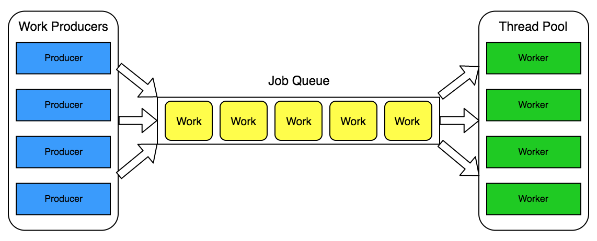

## Многопоточность в JVM и Scala Лекция 10 --- ### Организационная информация --- Сдача проектов через наш Gitlab - [Ссылка](https://tinkoff-edu.gitlab.yandexcloud.net/scala-course-autumn-2023/Projects/Project) --- Workshop по индустриальным практикам пройдет на следующей неделе в онлайне: - Вторник (21 ноября) в 18:30 по МСК Будут рассматриваться индустриальные подходы по созданию REST сервиса на Scala с использованием функционального стека Workshop будет проводить - Павел Тишкин
Есть несколько определений связанных с конкурентным исполнением кода: - Многозадачность - Многопоточность - Конкурентность - Параллелизм --- _Многозадачность_ - способность работать над несколькими задачами одновременно. Иначе говоря, совершать по этим задачами прогресс. --- В контексте Операционных Систем, способность запускать несколько приложений, программ, процессов одновременно. --- В контексте программ, способность программы работать над несколькими задачами одновременно. --- Многозадачность != Многопоточность --- Для примера, это пример программы с 2 задачами, которые исполняются на одном ядре процессора | Ядро 1 | |------------------------| | задача 1 стартует | | задача 2 стартует | | задача 1 прогрессирует | | задача 2 прогрессирует | | задача 1 заканчивается | | задача 2 заканчивается | --- Можно также переписать исполнение программы таким образом, что она начинает исполняться на 2 ядрах процессора. Это все программа с многозадачностью | Ядро 1 | Ядро 2 | |------------------------|------------------------| | задача 1 стартует | задача 2 стартует | | задача 1 прогрессирует | задача 2 прогрессирует | | задача 1 заканчивается | задача 2 заканчивается | --- Бывает два типа многозадачности: __вытесняющая__ (__preemptive__) и __кооперативная__ (__cooperative__) --- В __вытесняющей__ многозадачности каждая задача может быть остановлена каким-то внешним процессом --- | Ядро 1 | |--------------------------------------------| | задача 1 стартует и затем остановлена | | задача 2 стартует и затем остановлена | | задача 1 прогрессирует и затем остановлена | | задача 2 прогрессирует и затем остановлена | | задача 1 заканчивается | | задача 2 заканчивается | Такая многозадачность обычно реализована на уровне процессов и операционной системы --- В __кооперативной__ многозадачности, каждая задача может сама добровольно передать контроль управления другой задаче --- | Ядро 1 | |---------------------------------------------| | задача 1 стартует и передает контроль | | задача 2 стартует и передает контроль | | задача 1 прогрессирует и передает контроль | | задача 2 прогрессирует и передает контроль | | задача 1 заканчивается и передает контроль | | задача 2 заканчивается и передает контроль | Такая многозадачность обычно реализована на уровне программы --- Многопоточность - это способность программы быть исполнена на нескольких потоках, или ядрах процессора --- Пример №1 | Ядро 1 | Ядро 2 | |------------------------|------------------------| | задача 1 стартует | задача 2 стартует | | задача 1 прогрессирует | задача 2 прогрессирует | | задача 1 заканчивается | задача 2 заканчивается | --- Пример №2 Многопоточная программа без многозадачности --- | Ядро 1 | Ядро 2 | |------------------------|------------------------| | задача 1 стартует | ничего | | задача 1 прогрессирует | ничего | | задача 1 заканчивается | ничего | | ничего | задача 2 стартует | | ничего | задача 2 прогрессирует | | ничего | задача 2 заканчивается | --- Пример №3 --- | Ядро 1 | Ядро 2 | |------------------------|------------------------| | задача 1 стартует | ничего | | задача 2 стартует | ничего | | ничего | задача 1 прогрессирует | | ничего | задача 2 прогрессирует | | задача 2 заканчивается | ничего | | задача 1 заканчивается | ничего | --- __Конкурентность__ (__Concurrency__) - это когда программа может исполнять несколько задач в пересекающиеся промежутки времени --- Пример №1 | Ядро 1 | Ядро 2 | |------------------------|------------------------| | задача 1 стартует | - | | задача 2 стартует | задача 1 прогрессирует | | задача 1 заканчивается | задача 2 прогрессирует | | задача 2 заканчивается | - | --- Пример №2 | Ядро 1 | |------------------------| | задача 1 стартует | | задача 2 стартует | | задача 1 прогрессирует | | задача 2 прогрессирует | | задача 1 заканчивается | | задача 2 заканчивается | --- Конкурентное исполнение необязательно должно использовать исполнение на нескольких потоках. Самый очевидный пример, одно-поточный Javascript. --- __Параллелизм__ (__Parallelism__) - это когда программа может исполнять несколько независимых задач в параллель одновременно на нескольких ядрах --- Пример | Ядро 1 | Ядро 2 | |------------------------|------------------------| | задача 1 стартует | задача 2 стартует | | задача 1 прогрессирует | задача 2 прогрессирует | | задача 1 заканчивается | задача 2 заканчивается |
## Синхронное / Асинхронное взаимодействие --- __Синхронное__ (__Synchronous__) вычисление может вернуть либо результат, или ошибку --- ```scala [1-15] trait SyncDB { def getUser(id: String): User } ``` `getUser` всегда вернет или `User`, или выкинет исключение --- __Асинхронное__ (__Asynchronous__) вычисление может вернуть либо результат, либо ошибки, либо вообще ничего --- ```scala [1-15] trait AsyncDB { def getUserAsync( id: String, callback: Callback[User] ): Unit } trait Callback[A] { def complete(res: Either[Throwable, A]): Unit } ``` --- ```scala [1-15] val callback: Callback[User] = { case Right(user) => println(s"Received a user: $user") case Left(th) => println(s"Received an error: $th") } val db: AsyncDB = ??? println("Getting a user") db.getUserAsync("petya", callback) println("Sent a request") ``` --- Какие могут быть варианты исполнения такого кода? --- Сценарий №1 - Получение пользователя когда-то в будущем ```scala [1-15] // "Getting a user" // "Sent a request" // "Received a user: Petya" ``` --- Сценарий #2 - Получение ошибки когда-то в будущем ```scala [1-15] // "Getting a user" // "Sent a request" // "Received an error: NoSuchUserException" ``` --- Сценарий #4 - Получения пользователя сразу ```scala [1-15] // "Getting a user" // "Received a user: Petya" // "Sent a request" ``` --- Сценарий #4 - Ничего не получили ```scala [1-15] // "Getting a user" // "Sent a request" ```
### Модель потоков в JVM --- Операционная Система имеет потоки, легкие процессы, которые позволяют более гибко работать в рамках процесса с ядрами, увеличивая таким образом отзывчивость системы и утилизацию ресурсов в рамках процесса --- Java имеет специальный класс, который позволяет создавать потоки на уровне Операционной Системы - `java.lang.Thread`. Каждый объект, инстанс, класса `java.lang.Thread` соотносится с одним системным потоком. Каждый поток может исполнять задачу - экземпляр интерфейса `Runnable`: ```scala [1-15] trait Runnable { def run(): Unit } ``` --- ```scala [1-15] import java.lang.Thread val t1 = new Thread(() => println(s"Hello 1!")) val t2 = new Thread(() => println(s"Hello 2!")) t1.start() t2.start() ``` --- Мы знаем, что системные потоки - дорогой ресурс. Поэтому мы не можем, например, для каждого запроса на наш сервер выделять по потоку Нужно время и память на создание каждого потока. Более того для процесса существует физический лимит Операционной Системы на одновременное количество потоков. --- Поэтому нам необходимо ограничивать количество потоков в нашей программе и учиться их переиспользовать. Именно поэтому принято создавать пул потоков и распределять работу между потоками в этом пуле.

Пул потоков представляет из себя очередь задач, которые уже созданные потоки могут брать и исполнять --- Java имеет интерфейсы `Executor` и `ExecutorService` для абстракции пула потоков: ```scala [1-15] trait Executor { def execute(task: Runnable): Unit } ``` --- - `Runnable` представляет из себя задачу, которую каждый поток может взять на исполнение - `Executor` в своей самой наивной реализации - просто кладет задачу в очередь --- ```scala [1-15] val executor: Executor = ??? executor.execute(() => println("Hello 1!")) executor.execute(() => println("Hello 2!")) ``` --- В самой базовой реализации нашего сервера мы можем моделировать каждый запрос, как `Runnable`, отправлять его на исполнение в пул потоков и при исполнении задачи (`Runnable`) отдавать результат: --- ```scala [1-15] trait HandleRequest { def handle(req: HttpRequest): HttpResponse } val handler: HandleRequest = ??? val executor: Executor = ??? ``` --- ```scala [1-15] def getNewRequest(): HttpRequest = ??? def sentResponse(resp: HttpResponse): Unit = ??? while (true) { val req = getNewRequest() executor.execute { () => val resp = handler.handle(req) sentResponse(resp) } } ``` --- ### Блокировка Потоки могут быть заблокированы, пока определенное событие не случится, которое их разблокирует. Например, ответ от внешней системы или базы данных. Блокировка потока в таком случае приводит к тому, что поток не выполняет никакой работы, а просто ждет ответа. --- Почему это может напрямую сказываться на производительности нашего простого сервера? --- Зачастую наш сервис куда-то ходит - в базу данных или другой сторонний сервер. Если мы на каждом запросе, будем куда-то ходить и просто ждать - это может напрямую сказываться на пропускной способности нашего сервиса. Мы банально не сможем обработать 10 тысяч запросов одновременно --- Иными словами, блокировка потоков - это плохо --- Современные решения базируется на реактивных подходах. Главная идея - подробить нашу задачу (обработки запроса) на более маленькие. И в момент, когда нам нужно дождаться ответа от сторонней системы, мы будем по ответу создавать новую задачу в нашу очередь и будем брать следующую задачу из очереди. Нам поможет в этом асинхронное исполнение. --- ```scala [1-15] trait Callback[A] { def complete(res: Either[Throwable, A]): Unit } def callHttpServer( req: HttpRequest, callback: Callback[HttpResponse] ): Unit = ??? ``` --- ```scala [1-15] val executor: Executor = ??? def continueProcessing(resp: HttpResponse): Unit = ??? executor.execute { () => callHttpServer( // Первая подзадача getRequest(), { case Right(resp) => executor.execute(() => continueProcessing(resp) // Вторая подзадача ) case Left(th) => println(s"Received error: $th") } ) } ``` --- Java имеет множество API для работы с внешним миром. Какие-то блокирующие, какие-то нет. Для работы с сетью принято использовать `java.nio` - неблокирующее API для работы с файловой системой и сетью. Поэтому обычно вся обработка и отправка HTTP запросов не блокирует потоки. --- `java.nio` абстрагирует асинхронное API самой Операционной Системы. В Linux - это интерфейс `epoll` Псевдокод на `Scala`: ```scala [1-15] trait Epoll { def add(fd: FileDescriptor, events: List[Epoll.Event]): Boolean def update(fd: FileDescriptor, events: List[Epoll.Event]): Boolean def remove(fd: FileDescriptor): Boolean def wait(maxEvents: Int, timeout: Duration): List[Epoll.Event] } ``` --- Обычно выделяется отдельный поток для обработки событий от `Epoll`: ```scala [1-15] val executor: Executor = ??? val epoll: Epoll = ??? def processEvent(event: Epoll.Event): Runnable = ??? val loop = new Thread { () => while (true) { epoll .wait(100, 10.seconds) .foreach { event => executor.execute(processEvent(event)) } } } ``` --- Для работы с БД принято использовать `JDBC` - блокирующее API. И тут становится больно. В реактивных системах принято выделять отдельный пул потоков для блокирующего взаимодействия, чтобы не затрагивать основной пул для обработки запросов. --- `JDBC` - пример старого блокирующего API, которое очень широко распространено. Будьте аккуратны при вызове Java библиотек, потому что под капотом они могут блокировать ваши потоки. Всегда стоит об этом помнить.
## Модель памяти JVM --- - Каждый поток имеет собственную стек память - Каждый JVM процесс имеет общую `heap` память, которая является общей для всех потоков --- Стоит помнить, что каждая переменная хранится в стек памяти В случае объектов - каждый поток имеет свою переменную на стеке со ссылкой на объект в куче.
Это не противоречит обычному JVM приложению с одним потоком - `main` Там также есть свой стек и общий `heap` Помимо этого стандартный JVM процесс имеет системные потоки - для сборщика мусора, для JIT компиляции и тд. Именно из-за общей `heap` памяти происходит зачистка объектов, и по-умолчанию любая JVM программа - многопоточная. --- ## Состояние гонки Любое изменение общей памяти подвержено состоянию гонки: ```scala [1-15] class MyCounter(var count: Int = 1) val counter = new MyCounter() val t1 = new Thread(() => counter.count += 1) val t2 = new Thread(() => counter.count += 1) t1.start() t2.start() ``` --- В этом примере, у нас нет гарантии, что "главный" поток вообще увидит изменения, которые сделали `t1` и `t2`
Это происходит из-за того, что каждое ядро имеет собственный кэш памяти И все изменения этого кэша могут оставаться локальными, не попадая в основную оперативную память процессора. --- Нам нужно уметь заставлять поток проливать изменения с переменными в основную память, чтобы другие потоки могли их видеть. Для этого в Java есть специальный механизм - `volatile` переменные (обозначаются ключевым словом `volatile`). В Scala для этого есть аннотация - `volatile` Такие переменные все изменения производят в оперативной памяти, минуя кэши процессора. --- ```scala [1-15] class MyCounter(@volatile var count: Int = 1) val counter = new MyCounter() val t1 = new Thread(() => counter.count += 1) val t2 = new Thread(() => counter.count += 1) t1.start() t2.start() ``` --- Из-за того что мы запрещаем для `volatile` переменных использовать кэш процессора, то это несет накладные расходы на производительность. Мы не можем просто помечать все переменные, как `volatile` --- C таким кодом все равно остается проблема. Мы можем получить ситуацию, когда оба потока вычитают состояние `1` из переменной и два раза сделают обновление на одно и тоже значение `2`. Чтобы предотвратить такое поведение есть 2 варианта --- Первый -- использовать встроенный в Java механизм синхронизации потоков через `synchronized`: ```scala [1-15] class MyCounter(@volatile var count: Int = 1) val counter = new MyCounter() val t1 = new Thread(() => counter.synchronized { counter.count += 1 }) val t2 = new Thread(() => counter.synchronized { counter.count += 1 }) t1.start() t2.start() ``` --- В таком случае, первый поток, который получит доступ до объекта сможет его изменить. Другой поток будет заблокирован, и будет вынужден ждать, пока первый не закончит. Затем другой второй поток сможет тоже получить доступ на изменение и выполнить изменение. Таким образом мы достигаем атомарного изменения переменной. --- Стоит помнить, что любой вызов к `synchronized` объекту будет приводить к блокировке других потоков, что может негативно сказываться на производительности приложения --- Второй способ - неблокирующий. Иногда нам проще попробовать еще раз изменить нашу переменную, если у нас не получилось в первый раз. На этом принципе основаны утилиты `Java`: `AtomicReference` и другие --- Они выстроены на операции процессора `compareAndSet` (`CAS`): ```scala [1-15] class MyAtomic(@volatile private var count: Int = 0) { def update(f: Int => Int): Unit = { var prev = count while (true) { val updated = f(count) if (compareAndSet(prev, updated)) return; prev = count } } } ``` --- - Мы считываем переменную, пытаемся ее обновить - Если обновление - успешное, то выходим из цикла - Если - нет, то продолжаем попытку обновления --- Такой подход не требуется блокировок, но может производить лишние вычисление Зачастую - это дешевле, чем блокировать поток. --- Примитивы синхронизации нужны для того, чтобы выстраивать гарантированный порядок обработки внутри критической секции. С помощью них можно делать транзакционные изменения с сложным состоянием.
## Execution Context и Future --- Асинхронные вычисления, работа с коллбэками и менджемент пулов потоков могут становиться очень тяжелыми в работе и могут приводить к ошибкам В Scala есть встроенный и более удобный подход к работе с асинхронными вычислениями - `Futures`, которые призваны решать часть проблем. --- `Future` в Scala - это значение, которое станет доступно (будет вычислено) когда-то в _будущем_. Отсюда и название. `Future` может быть получена прямо в момент старта вычисления без блокировки вызывающего потока --- ```scala [1-15] import scala.concurrent.ExecutionContext.Implicits.global val somewhereOne: Future[Int] = Future { println("Hello 1!") 1 } val somewhereTwo: Future[Int] = Future { println("Hello 2!") 2 } println("Hi!") // Hi // Hello 1! // Hello 2! ``` --- `Futures` необходим неявный `ExecutionContext`, для того чтобы быть сконструированной и начать исполнение. `ExecutionContext` наследует Java интерфейс `Executor` и `ExecutorService` и представляет из себя пул потоков. `ExecutionContext.Implicits.global` - это глобальный неявный `ExecutionContext` Обычно, каждый фреймворк определяет свой собственный `ExecutionContext` --- ```scala [1-15] object Future { def apply[A](a: => A)( implicit ec: ExecutionContext ): Future[A] = ??? //... другие методы } ``` `apply` принимает в себя выражение через `by-name` аргумент , которое исполняется уже потом под капотом внутри `ExecutionContext` путем превращения в `Runnable` задачу. --- Это обозначает, что `Future` - жадная (eager). То есть как только она будет сконструирована, это значит, что она уже где-то исполняется. Мы можем также использовать альтернативный фабричный метод `successful`, который создаст уже успешно выполненную `Future` с предоставленным значением ```scala [1-15] object Future { def successful[A](a: A): Future[A] = ??? //... другие методы } ``` --- Какие есть варианты исполнения у такого кода? ```scala [1-15] import scala.concurrent.ExecutionContext.Implicits.global val somewhereOne: Future[Int] = Future { println("Hello 1!") 1 } val somewhereTwo: Future[Int] = Future { println("Hello 2!") 2 } println("Hi!") ``` --- ```scala [1-15] // Hi! // Hello 1! // Hello 2! ``` ```scala [1-15] // Hi! // Hello 2! // Hello 1! ``` ```scala [1-15] // Hello 2! // Hello 1! // Hi! ``` --- А какие есть варианты исполнения у этого кода? ```scala [1-15] import scala.concurrent.ExecutionContext.Implicits.global val somewhereOne: Future[Int] = Future.successful { println("Hello 1!") 1 } val somewhereTwo: Future[Int] = Future.successful { println("Hello 2!") 2 } println("Hi!") ``` --- Только один ```scala [1-15] // Hello 1! // Hello 2! // Hi! ``` В этом примере вообще нет никаких асинхронных вычислений --- `Future` могут быть также завершены ошибкой - `Throwable`. Ошибка прекращает цепочку исполнения `Future` ```scala [1-15] object Future { def failed[A](th: Throwable): Future[A] = ??? //... другие методы } ``` --- `Future` имеет комбинатор `map`, как и у коллекций ```scala [1-15] trait Future[+A] { def map[B](f: A => B)( implicit ec: ExecutionContext ): Future[B] // other methods } ``` Стоит заметить, что метод принимает неявный параметр `ExecutionContext`. Как вы думаете зачем он здесь? --- `map` будет под капотом создавать новую `Future`, которая будет скрывать переданную функцию `f` в новый `Runnable` Таким образом будет достигаться последовательность текущий `Future` с созданной в методе `map` `f` будет исполнена только когда текущая `Future` завершится с результатом. --- `Future` также имеет `flatMap` комбинатор ```scala [1-15] trait Future[+A] { def flatMap[B](f: A => Future[B])( implicit ec: ExecutionContext ): Future[B] // other methods } ``` Правила здесь такие же, как и с `map` комбинатором --- Как такое устройство `Future` может сказываться на производительности нашей программы? --- Мы можем создавать слишком много _маленьких_ задач для одного `Runnable`. То есть таким образом мы будем тратить больше времени на сопутствующие переключения контекста между потоками Чем больше лишних переключений контекста, тем больше времени мы тратим впустую. --- `Future` мемоизируют значения, как только они были вычислены ```scala [1-15] val asyncOne: Future[Int] = ??? def executeAfterOne(in: Int): Future[Int] = ??? def executeAfterTwo(in: Int): Future[Int] = ??? val chainOne: Future[Int] = asyncOne.flatMap(executeAfterOne) val chainTwo: Future[Int] = asyncOne.flatMap(executeAfterTwo) ``` `asyncOne` будет исполнен один раз. Дальше мы будем уже переиспользовать полученное значение --- Мы можем использовать `for-comprehension` для работы с `Future`: ```scala[1-15] def callDBOne: Future[Int] = ??? def callDBTwo: Future[Int] = ??? def logicParallel: Future[Int] = { val futureOne = callDBOne val futureTwo = callDBTwo for { resOne <- futureOne resTwo <- futureTwo } yield resOne + resTwo } ``` --- В зависимости от характера композиции, мы можем получать разные результаты исполнения: ```scala[1-15] def callDBOne: Future[Int] = ??? def callDBTwo: Future[Int] = ??? def logicSequential: Future[Int] = for { resOne <- callDBOne resTwo <- callDBTwo } yield resOne + resTwo ``` --- `Future` помогает нам абстрагироваться от сложности композиции асинхронного кода, и проще писать код